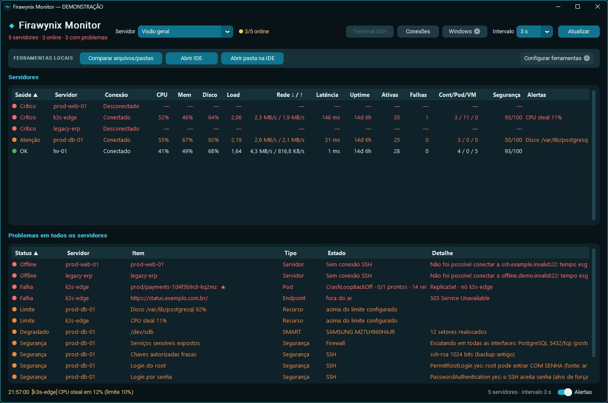
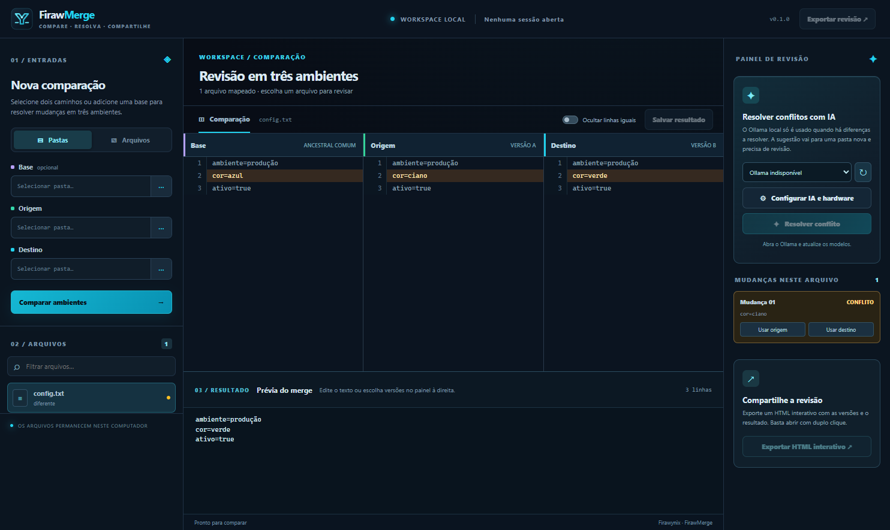

Monitor
Acompanhe serviços Linux e seus alertas nas conexões SSH que você configurar. Nenhum servidor vem cadastrado.
SERVIÇOS · RECURSOS · ALERTASFIRAWYNIX / WORKSPACE
Monitore serviços Linux, desenvolva na IDE e compare arquivos com o FirawMerge. Três ferramentas em um aplicativo Windows, com cada fluxo no seu próprio espaço.
Gratuito para Windows 10 e 11. A página da Store pode ficar indisponível até a conclusão da certificação.

TRÊS FERRAMENTAS, UM WORKSPACE
Abra a ferramenta certa para cada tarefa, sem misturar seus projetos locais com as conexões do Monitor.
Acompanhe serviços Linux e seus alertas nas conexões SSH que você configurar. Nenhum servidor vem cadastrado.
SERVIÇOS · RECURSOS · ALERTASTrabalhe em português brasileiro ou inglês com editor, terminal e recursos opcionais de IA local.
EDITOR · TERMINAL · IA LOCALCompare arquivos e pastas locais, revise diferenças e escolha o resultado antes de salvar.
ARQUIVOS · PASTAS · DIFERENÇASCONTROLE EM CADA ETAPA
O FirawMerge fica disponível para comparações locais, inclusive quando você abre uma revisão a partir da IDE. O resultado só é salvo depois da sua escolha.

FIRAWYNIX / OPEN SOURCE
O código desta edição pública está no GitHub FIRAWYNIX. O pacote começa sem servidores configurados. Recursos de rede, modelos de IA e conexões SSH dependem das opções que você escolher no aplicativo.
ESCOLHA SUA VERSÃO
Use o Workspace completo ou instale apenas a ferramenta que você precisa. A disponibilidade na Store depende da conclusão da certificação de cada aplicativo.
PRONTO PARA O WINDOWS